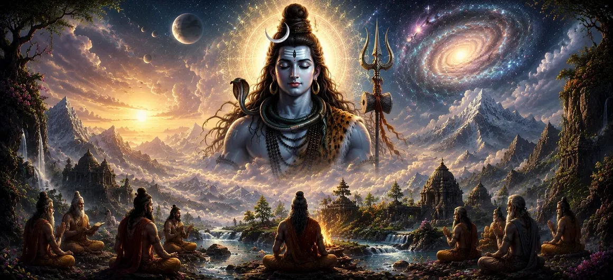

After understanding the eternal and limitless nature of Lord Shiva, the sages desired to learn how creation itself began. If Mahadeva alone existed before the universe, how did the countless worlds, gods, living beings, and cosmic forces come into existence? In response to this profound question, the Shiva Purana reveals one of its most sacred teachings—the manifestation of Divine Shakti, the eternal power of Lord Shiva. This chapter marks the beginning of the great mystery of creation. The sages listen with deep devotion as the divine narration explains how the Supreme Lord's infinite energy becomes the source of all manifestation. Through this sacred revelation, seekers begin to understand that creation is not separate from the Divine, but a direct expression of the eternal power that resides within Shiva Himself. भगवान शिव के शाश्वत और असीम स्वरूप को समझने के बाद ऋषियों ने जानना चाहा कि स्वयं सृष्टि का आरंभ कैसे हुआ। यदि ब्रह्मांड के प्रकट होने से पहले केवल महादेव ही विद्यमान थे, तो असंख्य लोक, देवता, जीव और ब्रह्मांडीय शक्तियाँ कैसे अस्तित्व में आईं? इस गहन प्रश्न के उत्तर में शिव पुराण अपनी अत्यंत पवित्र शिक्षाओं में से एक का वर्णन करता है—भगवान शिव की सनातन शक्ति, दिव्य शक्ति का प्राकट्य। यह अध्याय सृष्टि के महान रहस्य का आरंभ है। ऋषि गहन भक्ति के साथ उस दिव्य कथा को सुनते हैं जिसमें बताया गया है कि परमेश्वर की अनंत ऊर्जा किस प्रकार समस्त प्रकट सृष्टि का स्रोत बनती है। इस पवित्र रहस्योद्घाटन से साधक समझने लगते हैं कि सृष्टि परमात्मा से अलग नहीं है, बल्कि स्वयं शिव में स्थित शाश्वत शक्ति की प्रत्यक्ष अभिव्यक्ति है।
The Shiva Purana teaches that Shiva and Shakti are eternally inseparable. Just as the sun cannot exist without its light, and fire cannot exist without its heat, the Supreme Lord cannot be separated from His Divine Power. Shiva is the eternal, unchanging Supreme Consciousness, while Shakti is His infinite energy through which creation, preservation, and transformation become possible. Although they are described by different names, Shiva and Shakti are not two separate realities. They are one eternal truth appearing in complementary forms. Shiva represents pure existence and consciousness, while Shakti represents divine activity and manifestation. Together they form the complete reality from which the entire universe arises and through which all life is sustained. शिव पुराण सिखाता है कि शिव और शक्ति सदा एक-दूसरे से अविभाज्य हैं। जिस प्रकार सूर्य अपने प्रकाश के बिना और अग्नि अपनी ऊष्मा के बिना नहीं रह सकती, उसी प्रकार परमेश्वर को उनकी दिव्य शक्ति से अलग नहीं किया जा सकता। शिव शाश्वत, अपरिवर्तनशील परम चैतन्य हैं, जबकि शक्ति उनकी अनंत ऊर्जा है जिसके माध्यम से सृष्टि, पालन और परिवर्तन संभव होते हैं। यद्यपि उन्हें अलग-अलग नामों से वर्णित किया जाता है, शिव और शक्ति दो अलग वास्तविकताएँ नहीं हैं। वे एक ही शाश्वत सत्य के पूरक रूप हैं। शिव शुद्ध अस्तित्व और चैतन्य का प्रतिनिधित्व करते हैं, जबकि शक्ति दिव्य क्रिया और अभिव्यक्ति का स्वरूप हैं। दोनों मिलकर वह पूर्ण वास्तविकता बनते हैं जिससे संपूर्ण ब्रह्मांड उत्पन्न होता है और जिसके द्वारा समस्त जीवन धारण किया जाता है।
Although Lord Shiva eternally exists in perfect completeness, His infinite compassion inspires the manifestation of creation for the benefit of countless souls. The Shiva Purana explains that Divine Shakti appeared not because anything was lacking, but because the Supreme Lord desired to express His divine glory through the creation of worlds, beings, and sacred spiritual paths. Through Shakti, the hidden potential of creation became ready to unfold. The manifestation of Divine Shakti marks the first movement within the cosmic mystery. Before Her appearance there was only the silent and transcendent reality of Shiva. With Her manifestation, the power required for creation, preservation, knowledge, devotion, and liberation became active within the universe. यद्यपि भगवान शिव अनंत काल से पूर्णता में स्थित हैं, उनकी असीम करुणा असंख्य जीवात्माओं के कल्याण के लिए सृष्टि के प्राकट्य को प्रेरित करती है। शिव पुराण स्पष्ट करता है कि दिव्य शक्ति का प्राकट्य किसी कमी के कारण नहीं हुआ, बल्कि इसलिए हुआ कि परमेश्वर लोकों, प्राणियों और पवित्र आध्यात्मिक मार्गों की सृष्टि के माध्यम से अपनी दिव्य महिमा को व्यक्त करना चाहते थे। शक्ति के माध्यम से सृष्टि की सुप्त संभावना प्रकट होने के लिए तैयार हुई। दिव्य शक्ति का प्राकट्य ब्रह्मांडीय रहस्य में प्रथम गति का संकेत है। उनके प्रकट होने से पहले केवल शिव की शांत और पारलौकिक सत्ता थी। उनके प्राकट्य के साथ सृष्टि, पालन, ज्ञान, भक्ति और मुक्ति के लिए आवश्यक शक्ति ब्रह्मांड में सक्रिय हुई।
From the infinite will of Lord Shiva emerged Adi Shakti—the Primordial Divine Mother. She appeared radiant beyond imagination, embodying wisdom, power, compassion, beauty, and spiritual energy. The scriptures describe Her as the eternal source of all goddesses and the divine force through which the universe receives life and movement. Though appearing in a distinct form, Adi Shakti remained inseparably united with Shiva. Together they represented the eternal balance of consciousness and power, stillness and activity, transcendence and manifestation. भगवान शिव की अनंत इच्छा से आदि शक्ति—आदिम दिव्य माता—का प्राकट्य हुआ। वे ऐसी दिव्य आभा से युक्त थीं जिसकी कल्पना करना भी कठिन है। उनमें ज्ञान, शक्ति, करुणा, सौंदर्य और आध्यात्मिक ऊर्जा का पूर्ण स्वरूप समाहित था। शास्त्र उन्हें समस्त देवियों का सनातन स्रोत तथा उस दिव्य शक्ति के रूप में वर्णित करते हैं जिसके द्वारा ब्रह्मांड को जीवन और गति प्राप्त होती है। यद्यपि वे एक विशिष्ट रूप में प्रकट हुईं, फिर भी आदि शक्ति शिव से पूर्णतः अविभाज्य रहीं। दोनों ने मिलकर चैतन्य और शक्ति, स्थिरता और क्रिया, पारलौकिकता और अभिव्यक्ति के शाश्वत संतुलन का प्रतिनिधित्व किया।
All living beings ultimately arise through the power of Divine Shakti. समस्त जीव अंततः दिव्य शक्ति की सामर्थ्य से ही प्रकट होते हैं।
Wisdom, learning, and spiritual understanding flow from Her divine grace. ज्ञान, विद्या और आध्यात्मिक समझ उनकी दिव्य कृपा से प्रवाहित होती है।
Every force of nature reflects a small expression of Her infinite power. प्रकृति की प्रत्येक शक्ति उनकी अनंत सामर्थ्य की एक छोटी-सी अभिव्यक्ति है।
With the manifestation of Divine Shakti, the stillness of the cosmic void gradually transformed into creative potential. The foundations of the future universe were established, and the divine energies necessary for creation began to awaken. Though the worlds had not yet appeared, the process that would eventually give rise to gods, sages, celestial realms, and living beings had already begun. The sages listened with wonder, realizing that every aspect of creation would emerge through the eternal partnership of Shiva and Shakti. This sacred truth became the foundation for understanding all future events described in the Shiva Purana. दिव्य शक्ति के प्राकट्य के साथ ब्रह्मांडीय शून्य की स्थिरता धीरे-धीरे सृजनात्मक संभावना में परिवर्तित होने लगी। भविष्य के ब्रह्मांड की आधारशिलाएँ स्थापित हुईं और सृष्टि के लिए आवश्यक दिव्य ऊर्जाएँ जागृत होने लगीं। यद्यपि लोक अभी प्रकट नहीं हुए थे, फिर भी वह प्रक्रिया आरंभ हो चुकी थी जो आगे चलकर देवताओं, ऋषियों, दिव्य लोकों और जीवों को जन्म देने वाली थी। ऋषियों ने विस्मय के साथ सुना और अनुभव किया कि सृष्टि का प्रत्येक पक्ष शिव और शक्ति की शाश्वत एकता से प्रकट होगा। यह पवित्र सत्य शिव पुराण में वर्णित आगे की सभी घटनाओं को समझने का आधार बना।
Adi Shakti is described as the embodiment of all divine virtues. She is the source of wisdom, compassion, purity, strength, patience, devotion, and spiritual illumination. Every noble quality found within the universe originates from Her eternal nature. Through Her grace, knowledge arises in the minds of sages, devotion awakens in the hearts of devotees, and righteousness flourishes throughout the worlds. The Shiva Purana praises Her as the mother of all beings, the protector of the virtuous, and the destroyer of ignorance. Though infinite in power, She is equally infinite in compassion, always working for the upliftment and welfare of creation. आदि शक्ति को सभी दिव्य सद्गुणों की मूर्ति कहा गया है। वे ज्ञान, करुणा, पवित्रता, शक्ति, धैर्य, भक्ति और आध्यात्मिक प्रकाश की स्रोत हैं। ब्रह्मांड में पाए जाने वाले प्रत्येक श्रेष्ठ गुण का मूल उनके शाश्वत स्वरूप में है। उनकी कृपा से ऋषियों के मन में ज्ञान उत्पन्न होता है, भक्तों के हृदय में भक्ति जागती है और समस्त लोकों में धर्म पुष्ट होता है। शिव पुराण उनकी स्तुति सभी प्राणियों की माता, सज्जनों की रक्षिका और अज्ञान का नाश करने वाली के रूप में करता है। वे शक्ति में अनंत होते हुए भी करुणा में भी अनंत हैं और सृष्टि के उत्थान तथा कल्याण के लिए निरंतर कार्य करती हैं।
Without Shakti, creation cannot manifest. Just as a seed contains the potential for a great tree, Divine Shakti contains the power necessary for the appearance of the universe. Through Her energy, the elements emerge, cosmic order is established, and life becomes possible. She is therefore revered as the creative force that transforms divine potential into visible reality. शक्ति के बिना सृष्टि प्रकट नहीं हो सकती। जिस प्रकार एक बीज में विशाल वृक्ष बनने की संभावना छिपी रहती है, उसी प्रकार दिव्य शक्ति में ब्रह्मांड के प्राकट्य के लिए आवश्यक सामर्थ्य निहित है। उनकी ऊर्जा से तत्व प्रकट होते हैं, ब्रह्मांडीय व्यवस्था स्थापित होती है और जीवन संभव होता है। इसलिए उन्हें उस सृजनात्मक शक्ति के रूप में पूजा जाता है जो दिव्य संभावना को दृश्य वास्तविकता में परिवर्तित करती है।
Shiva represents eternal consciousness and absolute reality. शिव शाश्वत चैतन्य और परम वास्तविकता के प्रतिनिधि हैं।
Shakti represents divine energy and the power of manifestation. शक्ति दिव्य ऊर्जा और अभिव्यक्ति की सामर्थ्य का प्रतिनिधित्व करती हैं।
Together they form the complete and eternal reality behind all existence. दोनों मिलकर समस्त अस्तित्व के पीछे स्थित पूर्ण और शाश्वत वास्तविकता का निर्माण करते हैं।
Having manifested from the eternal will of Lord Shiva, Adi Shakti now became the foundation upon which the process of creation would unfold. The divine energies required for future worlds, celestial beings, sacred knowledge, and cosmic order were established within Her. Though creation had not yet fully appeared, the universe now existed in its subtle and unmanifest form within the Divine Mother. The sages listened with awe, realizing that all future events in creation would arise through the blessings and power of Adi Shakti. The mystery of creation was gradually unfolding before them. भगवान शिव की शाश्वत इच्छा से प्रकट होकर आदि शक्ति अब उस आधार के रूप में स्थापित हुईं जिस पर सृष्टि की प्रक्रिया आगे बढ़ने वाली थी। भविष्य के लोकों, दिव्य प्राणियों, पवित्र ज्ञान और ब्रह्मांडीय व्यवस्था के लिए आवश्यक शक्तियाँ उनमें स्थापित हुईं। यद्यपि सृष्टि अभी पूर्ण रूप से प्रकट नहीं हुई थी, फिर भी संपूर्ण ब्रह्मांड अब दिव्य माता के भीतर अपने सूक्ष्म और अप्रकट रूप में विद्यमान था। ऋषियों ने विस्मय से सुना और समझा कि सृष्टि की आगे की सभी घटनाएँ आदि शक्ति के आशीर्वाद और सामर्थ्य से प्रकट होंगी। सृष्टि का रहस्य धीरे-धीरे उनके सामने खुल रहा था।
The scriptures declare that those who worship Adi Shakti with sincerity receive divine blessings in both worldly and spiritual life. She grants wisdom to seekers, strength to the weak, courage to the fearful, and devotion to those who long for union with the Divine. Her grace removes obstacles, purifies the heart, and guides the soul toward truth. Because She is the universal mother, Her compassion extends to all beings without distinction. Whether a person seeks knowledge, prosperity, protection, or liberation, Divine Shakti responds according to the sincerity of their devotion. Thus, sages and devotees throughout the ages have taken refuge in Her boundless mercy. शास्त्रों में कहा गया है कि जो लोग श्रद्धा और निष्ठा से आदि शक्ति की उपासना करते हैं, उन्हें सांसारिक और आध्यात्मिक दोनों जीवन में दिव्य आशीर्वाद प्राप्त होते हैं। वे साधकों को ज्ञान, दुर्बलों को शक्ति, भयभीत लोगों को साहस और परमात्मा से मिलन की आकांक्षा रखने वालों को भक्ति प्रदान करती हैं। उनकी कृपा बाधाओं को दूर करती है, हृदय को शुद्ध करती है और आत्मा को सत्य की ओर ले जाती है। सर्वमाता होने के कारण उनकी करुणा बिना किसी भेदभाव के सभी प्राणियों तक पहुँचती है। कोई व्यक्ति ज्ञान, समृद्धि, संरक्षण या मुक्ति की कामना करे, दिव्य शक्ति उसकी भक्ति की सच्चाई के अनुसार उत्तर देती हैं। इसी कारण सभी युगों के ऋषि और भक्त उनकी असीम करुणा की शरण लेते आए हैं।
Before the visible universe appeared, all future creation rested in its subtle form within Divine Shakti. The worlds, the gods, the elements, the sacred scriptures, and the countless living beings all existed as divine potential within Her infinite energy. Nothing had yet taken visible form, but the entire universe awaited the moment of manifestation through the will of Shiva and the power of Shakti. दृश्य ब्रह्मांड के प्रकट होने से पहले समस्त भावी सृष्टि अपने सूक्ष्म रूप में दिव्य शक्ति के भीतर स्थित थी। लोक, देवता, तत्व, पवित्र शास्त्र और असंख्य जीव—सभी उनकी अनंत ऊर्जा में दिव्य संभावना के रूप में विद्यमान थे। अभी किसी ने दृश्य रूप धारण नहीं किया था, परंतु पूरा ब्रह्मांड शिव की इच्छा और शक्ति के सामर्थ्य से प्रकट होने के क्षण की प्रतीक्षा कर रहा था।
As the narration continued, the sages gradually understood that creation was not the result of chance or accident. Every aspect of existence emerged through the divine harmony of Shiva and Shakti. The eternal Lord provided the supreme consciousness, while Divine Shakti provided the power through which creation could unfold. Together they formed the foundation of all cosmic existence. Filled with wonder and devotion, the sages prepared themselves to hear the next stage of the sacred story—the actual beginning of creation and the emergence of the cosmic order that governs the universe. जैसे-जैसे कथा आगे बढ़ी, ऋषियों ने धीरे-धीरे समझा कि सृष्टि संयोग या दुर्घटना का परिणाम नहीं है। अस्तित्व का प्रत्येक पक्ष शिव और शक्ति की दिव्य सामंजस्यपूर्ण एकता से प्रकट हुआ। सनातन भगवान ने परम चैतन्य प्रदान किया, जबकि दिव्य शक्ति ने वह सामर्थ्य प्रदान किया जिसके द्वारा सृष्टि विकसित हो सकती थी। दोनों मिलकर संपूर्ण ब्रह्मांडीय अस्तित्व की आधारशिला बने। विस्मय और भक्ति से परिपूर्ण ऋषि अब पवित्र कथा के अगले चरण को सुनने के लिए तैयार हुए—सृष्टि का वास्तविक आरंभ और उस ब्रह्मांडीय व्यवस्था का प्राकट्य जो समस्त जगत को संचालित करती है।
"Shiva is the eternal consciousness, and Shakti is the eternal power. Together they are the source of all worlds, all beings, and all divine mysteries." “शिव शाश्वत चैतन्य हैं और शक्ति शाश्वत सामर्थ्य। दोनों मिलकर सभी लोकों, सभी प्राणियों और सभी दिव्य रहस्यों के स्रोत हैं।”
The mystery of Divine Shakti has now been revealed. Continue to the next chapter to discover the sacred birth of Lord Brahma and the beginning of the great work of creation. दिव्य शक्ति का रहस्य अब प्रकट हो चुका है। अगले अध्याय में आगे बढ़ें और भगवान ब्रह्मा के पवित्र जन्म तथा सृष्टि के महान कार्य के आरंभ को जानें।